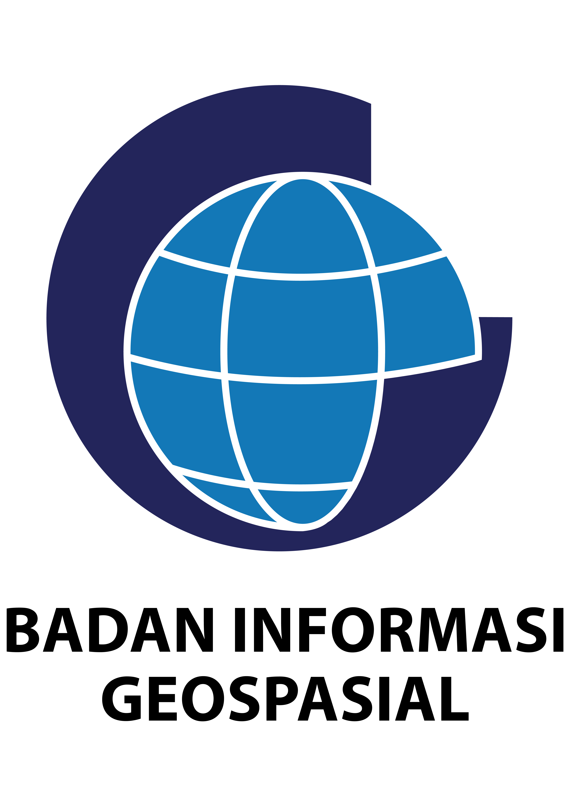

DASHBOARD PETA TERVERIFIKASI
Skala 1 : 5.000
(Tahun 2023 - 2025)
Capaian Peta Terverifikasi
Capaian Tahun 2023
6.653 km²
Capaian Tahun 2024
8.968 km²
Capaian Tahun 2025
9.925 km²
Pantauan Penyusunan
-- Pilih Provinsi --
Klik wilayah pada peta atau gunakan kolom pencarian untuk melihat data.